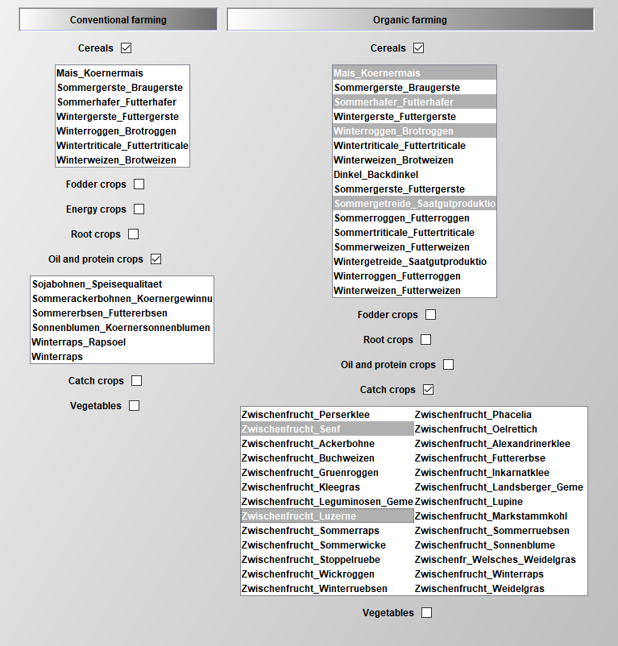

Data processing
There are multiple stages in the modelling sequence where data is processed to fit the requirements of the model and the configuration of the user. Before the simulation phase, the collected data has to be harmonized in order to fulfil the requirements of the model with respect to e.g. time (yearly, monthly, bi-weekly), disaggregation of production stages of animals (calves, heifers, etc.), and many more. In addition, parts of the database can be selected in order to process non-used parts of the database. This pre-simulation processing is further described in the section Build data. During the simulation phase, the configuration made by the user in the Graphical User Interface triggers another data processing step, where the required data is retrieved from the databases and further processed. This is described in the section Coefficient generator.
Build data - User or KTBL defined data files
As a long term goal, the FarmDyn crew plans to develop a flexible construction of the database in order to facilitate the use of FarmDyn for external users. Thereby, FarmDyn can be more easily adapted to other countries with different price/cost and policy structures.
Currently, FarmDyn provides the option to construct data sets for the arable crops. We differentiate here between the "User defined" and "KTBL defined" construction of the crop file. In the GUI you can find the different options to generate the data files as seen in the picture below:
Figure 1: Build data in the GUI Source: Own illustration
Each option to generate a new file for the database is presented in the following.
User defined files
For each data file which is to be adapted to a certain region, the user can alter the default values given in the pre-set default file. For example, crops has the default data for Germany given in the file cropsData_DE_Default.gms, which can be copied and changed in order to fit to crop data from other countries/regions and their corresponding agronomic and policy related differences. This file is then used to generate a .gdx file, which can be chosen in the GUI to introduce the specific crops.
Figure 1: User defined crop file Source: Own illustration
KTBL defined files
The KTBL database provides detailed data for 145 crops under conventional and organic production. To prevent large amounts of data from being included into FarmDyn, required crops can be selected within the build-data process. The file build_data_KTBL.gms first includes data for all crops available in the KTBL database (described in the section Database and model setup.) and thereafter generates subsets based on the crop selection. The corresponding data is stored in two .gdx files, which are later used in the model run.
 Figure 2: Crop selection for KTBL defined files Source: Own illustration
Coefficient generator - Concept and file structure
The coefficient generator comprises a number of small modules, realised in GAMS, which define the various exogenous parameters comprised in the template. It is designed such that it can generate from a few central characteristics of the farm (herd size, current milk yield, existing stables and their construction year, labour force and available land) and the realised crop yields a plausible set of coefficients for the template model. The coefficient generator can also be set-up to load parameters for a specific region.
The coefficient generator is divided in:
-
Beef:: length of production, costs per year and animal, and average age of animals to determine exact LU
-
Buildings: includes bunker silos for silage maize and potatoes.
-
Calves:: length of production, costs per year and animal, and average age of animals to determine exact LU
-
Cows: cows, heifers and calves are defined that have different milk yield potentials. Additionally, a maximum number of lactation is defined. It depends on the milk output level of the lactating cows (diminishes with increasing milk output potential).
-
Credit: different credit types are defined. These vary by interest rate and payback time.
-
Cropping: defines different activities for cash-crop production with specific restrictions concerning crop rotation, fertilizer demand and yield potentials.
-
Initial stables: Stable size and types, capacities and calculation of required stables places.
-
Environmental accounting: defines environmental impact due to manure and fertiliser application.
-
Farm constructor: the farm constructor defines the relationships between benchmark data of the farms and production specific endowments e.g. of land, stables and machinery in the initial situation.
-
Farm_Ini: Initialises the farms land endowment and plot distribution
-
Feeds: possible fodder compounds are listed with their specific contents of ingredients (N, C, DM, XP,...).
-
Fermenter_tech: includes all data regarding the technical aspects of the biogas fermenter, the different inputs and their related biogas yields.
-
Fertilising: defines coefficients for various application techniques for organic and synthetic fertilisers.
-
Greening: Adds the restrictions of the CAP Greening into the model.
-
Ini_herds: it defines the initial herds of the farm.
-
Labour: defines labour needs on a monthly basis for herds and crops and wages for the off-farm work.
-
Mach: defines the different types of machinery that are available for the farmer and it quantifies the useful lifetime (defined according to years or on hourly basis) as well as investments and variable costs.
-
Manure: quantifies amount of animal excreta with respect to livestock category. For cows manure amount is controlled by yearly milk output level. Furthermore, coefficients for different manure storage and application types are derived by this module.
-
Pigs: defines output coefficients, production lengths and other variable costs for fatteners and sows.
-
Prices: different default values are defined if prices for variables are not defined by the GUI.
-
Prices_eeg: contains the prices applied in the different EEGs as well as investment prices for different biogas plant parts.
-
Requ: definitions of requirement functions for lactating cows in relation to their milk yield, live weight etc., as well as for heifers and calves are included in this module.
-
Silos: in this module the definition of different types of surface reservoirs for liquid manure is set. It differentiates concerning capacity and related investment costs. Furthermore, additional costs of specific coverage types of the surface manure reservoirs are defined for straw coverage and coverage with foil.
-
Social_accounting:: conversion of animal output in calories and proteins
-
Stables: stable types with stable places and required workload for the respective stables for all herd types
-
StochProg: defines the decision tree and further GAMS symbols used in the stochastic programming version
-
Tech: defines all machinery, crop specific operation requirements and field working days.